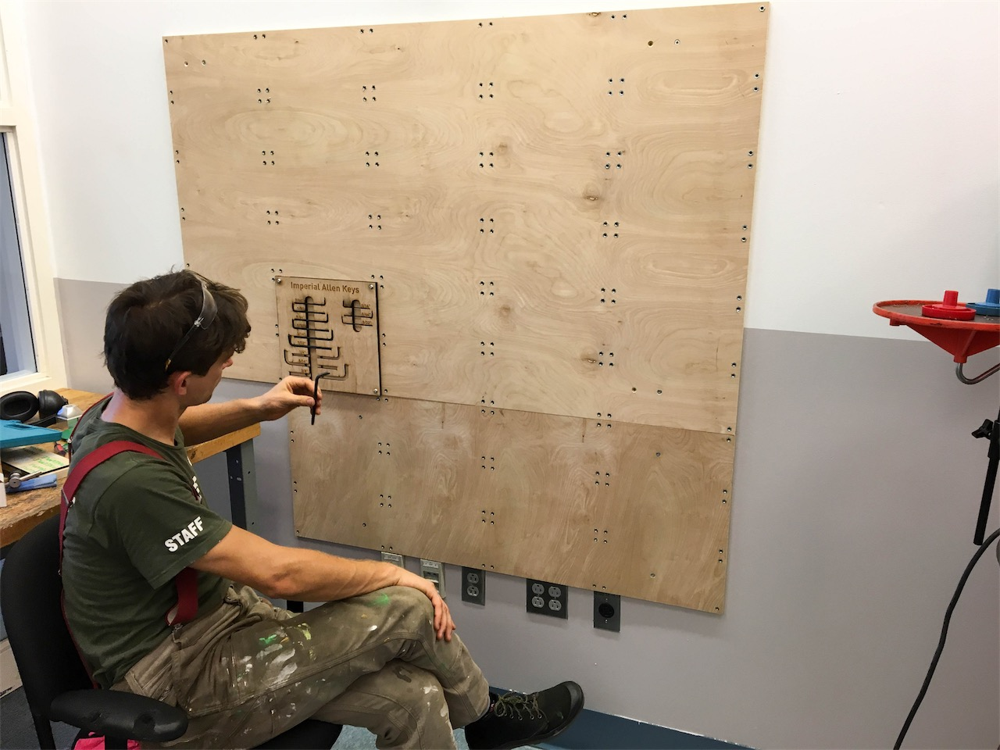

An Ode to the Workshop
Sunny Shroff

The Spark (based on a true story)
It was a mess. A complete and utter disaster. I cringed at the myriad of tools strewn aimlessly across the table, at the sprinkling of aluminum and steel dust that coated virtually every surface. I pushed through my distaste and began to do the work I came to do. As my buddy and I punched and bent our sheet metal brackets, another person came in and began to cut some aluminum on the horizontal band saw. The saw whirred rhythmically for a few minutes and promptly shut off as the stock fell to the ground. The next thing I heard was the brisk walk of a hurried engineering student and the familiar metallic thump of the door closing.
I promptly turned around and focused in on the considerable pile of aluminum shavings that covered the saw and ground. I was extremely annoyed; annoyed that someone could leave such a mess without a second thought, annoyed that this was a space where people felt that this kind of behavior was admissible. I made a split second decision and raced to the door. I called the person’s name and asked them to come back and clean up their mess. They stared at me for a moment and reluctantly returned to tidy the machine they had used. It was this moment that I knew that I wanted to do something about the blatant disregard for the space that plagued the school.
What I learned from The Workshop
While I could certainly write about what my hopes and dreams for The Workshop are, I feel that those thoughts are well laid out in our summer notes and design briefs. Instead, I would like to discuss what I learned along the way. Thanks to The Workshop for teaching me all these lessons that are pertinent to so much more.
How do we start?
Good question. For better or worse, the universe granted me a partner in crime who shared my contempt for the way students treated The Workshop: Steven ( ❤ you Steven). When beginning our journey to transform the space, we did lots of deep thinking into how we could physically modify the space in a way that could alter people’s perception, and thus their treatment, of the space. This brings us to the first lesson I learned this summer:
So much thinking, more thinking tomorrow.
If you want to make a change, whether it be big or small, it is necessary to know why you want to make the change and what goals the result should accomplish. Without synthesizing the answers to these questions, the change has no purpose. But often, breaking down these initial ideas takes time and a great deal of thinking. It may feel like you are going nowhere, but push through and the resulting work you do will feel much more purposeful and fulfilling.
A throwback
When making a change that impacts others, it is important that you gather data that confirms (or denies) any assumptions you have. This can be as simple as a survey blast, which is what we did, or as involved as in person interviews. Sending out our survey uncovered a great deal of mystery about who uses The Workshop, but also uncovered a lesson that I previously learned in my first year entrepreneurship course, Products & Markets:
We did it, we beat Aaron
When looking at our survey results, we realized that we had received a similar number of responses as Aaron had in a previous shop survey. We immediately had the urge to “beat” him by gathering more responses than he had. This kind of friendly competition, where both parties benefit from a win, can help to motivate one or both parties to go beyond what they would have ordinarily settled for.
All the feedback
Similar to data, feedback is crucial to making something more conducive to being used by others. I guarantee that by having other people interact with your design, either you or they will come up with some way to improve it, which brights us to the next lesson:
Play testing saves so much time
If you never really flesh out a design until someone else plays with it, it’s a waste of time to make the final version until you get some preliminary feedback. If you make a full version of your design every time you change a small element, you would waste so much time. So make sketch models, iterate on your design, and then make a final product.
The Internet is Your Friend
Steven and I had been trying to figure out the tool shadow software for hours. We had been taking pictures of tools in different lighting conditions in an effort to get a crisp outline. This method was not getting us anywhere, so we accepted defeat and turned to the great expanse that is the internet. Of course, within five minutes, we had the answer: we needed a lightbox.
Woah, they have a vacuum organizer
While the above statement seems to be completely unrelated to my initial example, it is actually exactly the same. I had begun designing a vacuum organizer, and when we visited Yale a few days later, I saw that they had the same vacuum as us, but with a off the shelf organizer. I was appalled, but then realized that I had never searched the internet for these organizers. In both of these cases, doing a quick search on the internet prior to beginning the project would have saved a significant amount of time.
Stay focused
When we were in the thick of redoing the The Workshop, we had a laundry list of tasks to complete. We started a few tasks, but kept on getting to a point where we felt that finishing the task would be more effort than we felt like giving at that particular moment. So, we moved on to the next task and the same thing happened. By the end of the day, we hadn’t finished a single task, and felt completely unfulfilled.
Many halves don’t make a whole
Half-finishing a bunch of tasks is never as good and completely finishing a few. Honestly, it feels terrible to have that many tasks looming over you, just wanting to be finished. Additionally, while you have done so much work, it feels like you have barely done anything because you haven’t been able to definitively check anything off.
Two sets of eyes are better than one
We were about to move the Roland from Lawrence’s lab to The Workshop, so we asked Evan and Jayce to help us carry the Roland and flip the table through the door. They walked into the lab and immediately noticed the giant unused door that lead out of it and into the design studio, hence:
A door unused often goes unseen
While in this case this statement is meant literally, it is also meant to remind you that you may not see a certain solution because you have always approached a problem a certain way, but a fresh set of eyes could see a better way. Additionally, don’t stop looking around because you think you have found a solution; always keep looking around.